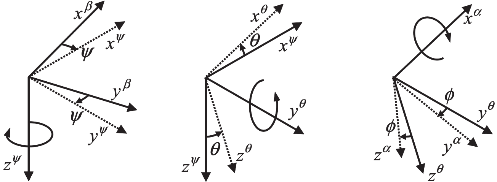

Kinematics: 2.2 Euler Angles
Euler Angles
A rotation of one frame to yield another frame can be achieved through a sequence of three eigenaxis rotations, where each eigenaxis is chosen to be an axis of either the initial frame or the frame resulting from the preceding rotation. Consequently, attitude can be broken down into three successive rotations, with each rotation about an axis orthogonal to that of its predecessor and/or successor. Given an object frame \(\alpha\) and a reference frame \(\beta\), we can describe the orientation of \( \alpha \) with respect to \(\beta\) via roll \( \phi_{\beta \alpha} \), pitch \( \theta_{\beta \alpha} \), and yaw \( \psi_{\beta \alpha} \) Euler angles. Here, we are only concerned with \(z\)-\(y\)-\(x\) sequence of rotations, i.e.,
- Rotation through the yaw angle \( \psi_{\beta \alpha} \) about the common \(z \) axis of the \( \beta \) frame and the first intermediate frame.
- Rotation through the pitch angle \( \theta_{\beta \alpha} \) about the common \(y \) axis of the first and second intermediate frame.
- Rotation through the roll angle \( \phi_{\beta \alpha} \) about the common \(x \) axis of the second frame and the \( \alpha \) frame.
Euler Angles to Transformation Matrix
Euler angles can be converted to rotation and transformation matrices described in 2.1 Transformation and Rotation Matrices. Consider two coordinate frames \(\alpha\) and \(\beta\) as shown in Fig 2.2. Let \(\mathbf{R}^{\alpha}_{\beta}\) be the transformation matrix from frame \(\beta\) to \(\alpha\). Let the axes of frame \(\beta\) be \((x^\beta, y^\beta, z^\beta)\). 
Fig 2.2 \(z\)-\(y\)-\(x\) rotation from left to right (source Groves, p34)
The first rotation will be through the yaw angle \( \psi_{\beta \alpha} \) about the common \( \) axis of the \( \beta \) frame to yield the first intermediate axes \((x^\psi, y^\psi, z^\psi)\): $$ \begin{align} & x^{\psi} = x^{\beta} cos(\psi_{\beta \alpha}) + y^{\beta} sin(\psi_{\beta \alpha}) \\ & y^{\psi} = -x^{\beta} sin(\psi_{\beta \alpha}) + y^{\beta} cos(\psi_{\beta \alpha}) \\ & z^{\psi} = z^{\beta}, \tag{2.2.1} \end{align} $$ which yields to a transformation matrix: $$ \mathbf{R}^{\psi}_{\beta} = \left[ \begin{array}{ccc} cos(\psi_{\beta \alpha}) & sin(\psi_{\beta \alpha}) & 0 \\ -sin(\psi_{\beta \alpha}) & cos(\psi_{\beta \alpha}) & 0 \\ 0 & 0 & 1 \end{array} \right] \tag{2.2.2} $$ The second rotation will be through the pitch angle \( \theta_{\beta \alpha} \) about the common \( y \) axis of the first and second intermediate frames: $$ \begin{align} & x^{\theta} = x^{\psi} cos(\theta_{\beta \alpha}) - z^{\psi} sin(\theta_{\beta \alpha}) \\ & y^{\theta} = y^{\psi} \\ & z^{\theta} = x^{\psi} sin(\theta_{\beta \alpha}) + z^{\psi} cos(\theta_{\beta \alpha}), \tag{2.2.3} \end{align} $$ which yields to a transformation matrix: $$ \mathbf{R}^{\theta}_{\psi} = \left[ \begin{array}{ccc} cos(\theta_{\beta \alpha}) & 0 & -sin(\theta_{\beta \alpha}) \\ 0 & 1 & 0 \\ sin(\theta_{\beta \alpha}) & 0 & cos(\theta_{\beta \alpha}) \end{array} \right] \tag{2.2.4} $$ The third and the last rotation will be through the roll angle \( \phi_{\beta \alpha} \) about the common \(x \) axis of the second frame and the \( \alpha \) frame: $$ \begin{align} & x^{\alpha} = x^{\theta} \\ & y^{\alpha} = y^{\theta} cos(\phi_{\beta \alpha}) + z^{\theta} sin(\phi_{\beta \alpha}) \\ & z^{\alpha} = -y^{\theta} sin(\phi_{\beta \alpha}) + z^{\theta} cos(\phi_{\beta \alpha}), \tag{2.2.5} \end{align} $$ which yields to a transformation matrix: $$ \mathbf{R}^{\alpha}_{\theta} = \left[ \begin{array}{ccc} 1 & 0 & 0 \\ 0 & cos(\phi_{\beta \alpha}) & sin(\phi_{\beta \alpha}) \\ 0 & -sin(\phi_{\beta \alpha}) & cos(\phi_{\beta \alpha}) \end{array} \right] \tag{2.2.6} $$ We can see that all three transformation matrices are transpose of 2.1.13. Using 2.1.6, the transformation matrix from frame \(\beta\) to \(\alpha\) is obtained as: $$ \mathbf{R}^{\alpha}_{\beta} = \mathbf{R}^{\alpha}_{\theta} \mathbf{R}^{\theta}_{\psi} \mathbf{R}^{\psi}_{\beta} \tag{2.2.7} $$ Hence $$ \mathbf{R}^{\alpha}_{\beta} = \left[ \begin{array}{ccc} cos(\theta_{\beta \alpha}) cos(\psi_{\beta \alpha}) & cos(\theta_{\beta \alpha}) sin(\psi_{\beta \alpha}) & -sin(\theta_{\beta \alpha}) \\ \\ \left( \begin{array}{c} -cos(\phi_{\beta \alpha}) sin(\psi_{\beta \alpha}) + \\ sin(\phi_{\beta \alpha}) sin(\theta_{\beta \alpha}) cos(\psi_{\beta \alpha}) \\ \end{array} \right) & \left( \begin{array}{c} cos(\phi_{\beta \alpha}) cos(\psi_{\beta \alpha}) + \\ sin(\phi_{\beta \alpha}) sin(\theta_{\beta \alpha}) sin(\psi_{\beta \alpha}) \\ \end{array} \right) & sin(\phi_{\beta \alpha}) cos(\theta_{\beta \alpha}) \\ \\ \left( \begin{array}{c} sin(\phi_{\beta \alpha}) sin(\psi_{\beta \alpha}) + \\ cos(\phi_{\beta \alpha}) sin(\theta_{\beta \alpha}) cos(\psi_{\beta \alpha}) \\ \end{array} \right) & \left( \begin{array}{c} -sin(\phi_{\beta \alpha}) cos(\psi_{\beta \alpha}) + \\ cos(\phi_{\beta \alpha}) sin(\theta_{\beta \alpha}) sin(\psi_{\beta \alpha}) \\ \end{array} \right) & cos(\phi_{\beta \alpha}) cos(\theta_{\beta \alpha}) \end{array} \right] \tag{2.2.8} $$